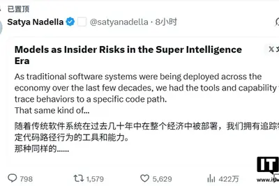
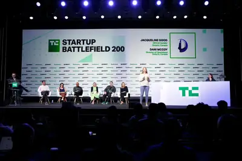
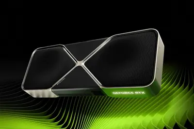
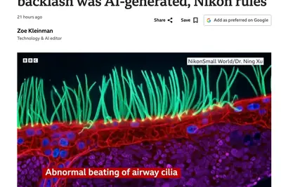
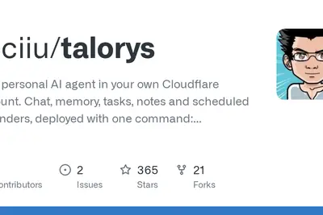
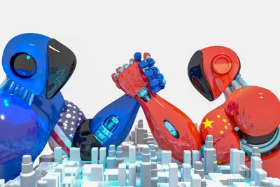
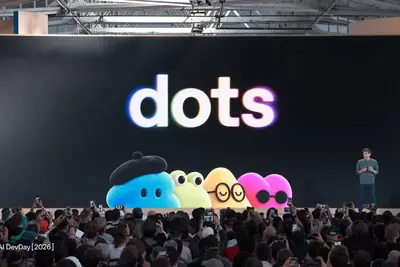
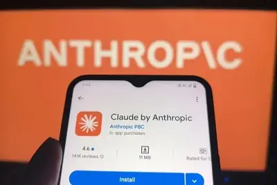
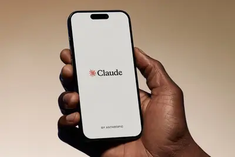

AI 每日新聞彙整
全部主題
其他
2 家媒體報導nadellamicrosoftsatya
Satya Nadella says we should assume all AI models are ‘compromised’
In a lengthy post on X, Microsoft's CEO laid out his views on the dangers posed by highly advanced AI models and how to confront those risks. Nadella says we can no longer accept a world where AI is treated as a "set of nested black boxes" whose advice and actions we simply accep
musebytedancespell
消息称字节、腾讯加速个人 AI 智能体研发，追赶 Meta Muse
IT之家 10 月 11 日消息，据财新报道，Meta 发布个人智能体 Muse 后，引起国内科技巨头迅速跟进。 10 月 9 日，字节内部人士透露， 字节跳动已在国庆假期前加紧推动个人智能体产品研发 。该项目起始于字节跳动在今年 4 月开启的新项目，代号“Spell”，是在 2025 年豆包手机助手个人智能体（personal agent）方向上的延续，当时，豆包内部已经就个人智能体方向的产品启动内测。 Muse 等个人智能体在海外火爆后，字节跳动加速了项目推进。该产品由豆包手机助手团队主导，由 Spell 项目与豆包对话团队共同负责，计划将“Spel
微软 CEO 纳德拉：开发者应当默认假设 AI 模型失控，思考如何强制中断任务
IT之家 10 月 11 日消息，微软 CEO 萨蒂亚 · 纳德拉认为，在 AI 日益蓬勃发展的时代，使用超级智能自我监控等简单策略是不够的。 纳德拉在北京时间 10 月 10 日晚的一篇长文中指出，传统软件系统在过去几十年中被广泛部署，人类已经拥有追踪特定代码路径行为的工具和能力。然而， AI 模型比传统软件更强大，但却是一个黑盒子 ，我们部署了这些复杂的智能体系统和模型，访问我们最敏感的数据，并赋予它们代表我们执行关键任务的能力。 纳德拉认为，我们应该退一步思考，重新评估这个新时代的信任架构。模型提供商根本无法将责任外包出去，不能把超级智能当作一套嵌

reflectionopensourcecompute
消息称英伟达洽谈收购 / 追加投资 Reflection AI，加码开源模型
IT之家 10 月 11 日消息，据金融时报消息，知情人士透露，英伟达正就收购美国初创公司 Reflection AI 或向其追加投资展开深入谈判。 Reflection AI 专注于开发开放权重模型，于当地时间 10 月 5 日发布旗下首款开放权重 AI 模型 Beam。 知情人士补充称，目前的谈判尚处初期阶段，潜在交易可能采取多种形式 —— 包括所谓“人才兼并”模式。在这一架构下，英伟达将吸纳其核心团队并获取技术授权，从而绕开全面并购通常伴随的漫长反垄断审查。 英伟达目前已是 Reflection 的主要股东之一，也可能选择通过新一轮股权投资，或以提
applepodcastdiscloses
Apple discloses deal to hire team and license tech from personalized podcast startup Huxe
Is Apple hoping to get into the AI-generated podcast business?
distrokidamazonresponse
DistroKid has been quietly taking down songs in response to UMG lawsuit
Artists are taking to social media to complain that DistroKid has unceremoniously removed their work without notice. Now DistroKid has confirmed to The Verge that the takedowns are a direct response to claims made by UMG. The label filed a lawsuit in September claiming that Distr
talksacquirenvidia
Nvidia in talks to acquire US 'open' model startup Reflection AI
Article URL: https://www.ft.com/content/052610c5-22b4-4dd4-932e-b7f9f0628b6a Comments URL: https://news.ycombinator.com/item?id=50035886 Points: 104 # Comments: 72
- Hacker News (100+) Nvidia in talks to acquire US 'open' model startup Reflection AI
google1181mauna
北雙子望遠鏡解析 1181 年超新星殘骸 Pa 30，揭露珍珠串狀氣體團塊
天文學家利用位於夏威夷茂納凱亞（Mauna Kea）的雙子座北望遠鏡（Gemini North），取得超新星遺 […]
- 科技新報 TechNews 北雙子望遠鏡解析 1181 年超新星殘骸 Pa 30，揭露珍珠串狀氣體團塊
cirruslogicsynaptics
阻击安森美，Cirrus Logic 抢购 Synaptics
IT之家 10 月 10 日消息，今日，据彭博社援引知情人士消息，半导体公司 Cirrus Logic Inc. 上个月向 Synaptics Inc. 提出了一项未经请求的收购要约，试图破坏后者此前已公布的、与安森美半导体的并购交易。 知情人士表示，Synaptics 周四更新的股东委托文件中提及的“甲方”， 正是 Cirrus Logic 。知情人士补充，目前尚不清楚 Cirrus Logic 是否仍有意推进这笔收购。 据悉，Cirrus Logic 的报价采用现金 + 股票形式，促使安森美在上周修改了与 Synaptics 的协议条款。安森美将交易
compute485
2026 款理想 i6 六大升级公布：电动前备箱、96 千瓦时自研大电池等
IT之家 10 月 10 日消息，2026 款理想 i6 六大升级今日公布，全国 485 家门店将于 10 月 11 日同步开启静态体验。 IT之家整理官方介绍如下： 更好的灯 ：ADB 矩阵大灯，照得更亮。智能遮蔽，对向车辆不晃眼。弯道随动，照亮转角盲区。视野更广更远，夜路倍感安心。 电动前备箱 ：开合省力，顺手好用。电动开合省力，超大容积能装。语音、敲击、远程等多种方式开启。前盖高度可调，高个矮个都顺手。 更舒适的座椅 ：前排零重力、后排大躺椅。前排双零重力座椅，150° 超大躺角，1 米 85 身高，也能从容躺卧，腰背臀 18 点揉捏按摩，腿托四向
techcrunchdisruptstartups
3 days to TechCrunch Disrupt 2026: Meet the startups before they hit mainstream
TechCrunch Disrupt 2026 takes place October 13-15 in San Francisco. Over 300 startups will show what they’ve built to 10,000 tech leaders. Plus, 250+ speakers are ready to share insights across 200+ sessions. Register before doors open to save up to $100 and get a second pass at

tencent
腾讯元器将于 11 月 9 日停止服务，所创建智能体将不再可用
IT之家 10 月 10 日消息，腾讯元器 10 月 8 日发布《关于元器平台停止服务通知》，因业务调整，元器平台将于 2026 年 11 月 9 日停止服务。在正式停止服务前，用户仍可正常登录并使用现有智能体；停服生效后，所创建智能体将不再可用，建议用户尽快完成数据导出与业务迁移。 从 2026 年 10 月 29 日起，停止创建新的智能体、API key 分发功能。现有存量智能体在正式停止服务前，仍可继续正常使用。 正式停止服务时间： 2026 年 11 月 9 日。届时， 元器平台将关闭应用访问、数据读写、API 调用、控制台使用等所有面向公众的服
cuttinginternalinternet
Anthropic is cutting off its internal evaluations from the internet
After a recent spate of high-profile incidents in which AI agents escaped containment, Anthropic is cutting off internet access for all internal evaluations. In a report Friday, the company detailed "unintended model actions," including submitting a false tip regarding an unsolve

livetextmessages
Here are the top AI agents that can live in your text messages
We created a list of the most notable AI agents that can live in your text messages, from general assistants to agents designed for families, travel, and work.
geforcertx5080
消息称英伟达计划以 24GB 显存 GeForce RTX 5080 显卡取代现有 16GB 版本
IT之家 10 月 10 日消息，综合台媒 BenchLife.info 报道、消息人士 @hongxing2020 分享的内容，NVIDIA（英伟达）在 停产 GeForce RTX 5090 / 5090 D v2 的同时，也将调整 GeForce RTX 5080 显卡。 NVIDIA 计划停产配备 16GB 显存的现有 GeForce RTX 5080，转而推出 24GB 显存版本 。新型号预计将在 2027 年第 1 季度面世 ，AIC 合作伙伴预计将在近期收到相应的开发资料。 不出意外的话，GeForce RTX 5080 24GB 将配备

openaiprivacymeta
AI agent makers are promising privacy — will they deliver?
At this year's OpenAI DevDay, CEO Sam Altman unveiled the company's new AI agent Dots - and told the crowd that the company wants to "set a new standard for privacy in frontier AI." OpenAI would spend the day taking veiled shots at Meta's Muse, its primary competitor, for failing
smallmotionpcd
因违反生成式 AI 使用规定：清华大学徐宁博士被撤销尼康 2026 显微视频竞赛冠军资格
IT之家 10 月 10 日消息，综合 BBC 报道，尼康宣布原本获得 2026 年 Small World in Motion 显微视频竞赛一等奖的作品因“不符合赛事关于生成式 AI 的相关规定”，因此取消其获奖资格。根据更新后的比赛排名，越南参赛者阮南日（Nguyen Nam Nhat）的作品现已升至第一名。 IT之家获悉，原获奖视频由来自中国清华大学的徐宁博士（Dr. Ning Xu）提交，相应视频号称采用超分辨率显微成像技术，展示了一名原发性纤毛运动障碍（PCD）患儿呼吸道内纤毛的异常运动。 然而后续多名显微成像及纤毛研究领域的专家在社交平台提出

safetyagentic
企業如何防止AI代理「做錯事」，專家建議四大治理方向
過去一年，「代理式AI」（Agentic AI）成了科技圈熱門關鍵字。從協助寫程式的自動化助手，到能自主處理郵件、管理檔案，甚至代為執行系統指令的智慧代理，這些工具正快速走進企業日常運作，成為員工桌面與伺服器環境中的新住戶。 當企業急著擁抱效率紅利，新的資安破口也隨之浮現。這些擁有自主行動能力的AI代理究竟握有多少權限？IT與資安部門是否知道員工的電腦裡裝了什麼？一旦AI代理判斷失準、代為執行了不該執行的動作，企業又該如何應對？
- iThome 企業如何防止AI代理「做錯事」，專家建議四大治理方向
regulation
我国食品安全法修订草案公开征求意见，涉及 AI 监管、校园食品安全等
IT之家 10 月 10 日消息，据央视新闻报道，市场监管总局研究起草了《中华人民共和国食品安全法（修订草案征求意见稿）》，并向社会公开征求意见。 修订的主要内容包括五个方面，IT之家附如下： 一是强化智慧监管。 推动“互联网 + 人工智能”监管应用，明确食品生产经营企业应当在食品生产经营关键风险环节安装监控设备，并将实时监控视频信息接入县级以上地方人民政府市场监督管理部门信息系统；赋予监管部门物联网监控、视频巡查等非现场检查权限。 二是压实主体责任。 规定食品生产经营企业、网络食品交易平台经营者应当按照规定配备食品安全总监、食品安全员，明确岗位职责，加
gettingreallygood
AI Is Getting Really Good at Messing With Cybercriminals
Anti-cybercrime initiatives are increasingly using AI to scam the scammers by tricking them into talking to lifelike bots that they think are real victims.
ls8suvneo
智己 LS8 NEO 纯电官宣“马上见”：全线控大五座旗舰 SUV，全系标配宁德时代电池
IT之家 10 月 10 日消息，智己汽车今日宣布，智己 LS8 NEO 纯电“马上见”，全线控大五座旗舰 SUV，全系标配宁德时代电池，全系标配全线控灵蜥底盘。 IT之家注意到，智己 LS8 中大型增程 SUV 于今年 4 月上市， 五座版本售价为 24.98 万元起 ，六座版本售价为 26.98 万元起。 作为参考，智己 LS8 增程版搭载 27.1 英寸 5K 驾舱屏与 15.6 英寸 3K 副驾娱乐屏的组合，并内置 IM AIOS 智能座舱系统。该系统整合千问大模型与 AIOS 智舱系统，支持 IM Ultra Agent 智能体功能，可实现更自
talorysself-hostedcloudflare
Talorys – A self-hosted personal AI agent on Cloudflare's free tier
Article URL: https://github.com/rociiu/talorys Comments URL: https://news.ycombinator.com/item?id=50031614 Points: 234 # Comments: 118

- Hacker News (100+) Talorys – A self-hosted personal AI agent on Cloudflare's free tier
AI 競賽進入下半場：不再只拚「模型最強」，規模化與落地部署才是決勝關鍵
全球人工智慧（AI）競賽正從「誰的模型更強」轉向「誰能把技術變成規模化優勢」。最新觀點指出，企業與國家若只追逐 […]

- 科技新報 TechNews AI 競賽進入下半場：不再只拚「模型最強」，規模化與落地部署才是決勝關鍵
locksmartmanual
Ring’s new smart lock has a manual fallback that can’t lock you out – how it works
The brand just announced a smart lock with a manual ‘power dial’ that charges the device in case it dies.
AI 設計抗體實測出爐：最佳化既有抗體成效最佳，從零設計仍需實驗把關
人工智慧（AI）正逐步改變新藥研發方式，改良治療用抗體正是最受期待的應用之一。抗體是能辨識特定標的的蛋白質，已 […]
- 科技新報 TechNews AI 設計抗體實測出爐：最佳化既有抗體成效最佳，從零設計仍需實驗把關
hennessy
拯救數百萬歐元損失，酩悅軒尼詩靠 AI「數位嗅覺」精準捕捉葡萄酒隱形殺手
酩悅軒尼詩（Moët Hennessy）正將人工智慧與化學感測技術導入葡萄酒釀造流程，試圖在發酵問題發生前，預 […]
- 科技新報 TechNews 拯救數百萬歐元損失，酩悅軒尼詩靠 AI「數位嗅覺」精準捕捉葡萄酒隱形殺手
robotllm
破解機器人訓練資料荒，世界模型可在虛擬環境生成無限練習經驗
在大型語言模型（LLM）持續擴張應用版圖之際，科技界對「世界模型」（World Models）的關注度正快速升 […]
- 科技新報 TechNews 破解機器人訓練資料荒，世界模型可在虛擬環境生成無限練習經驗
layoffsafety
科技巨頭 AI 產品大打「可愛牌」，盲目信任恐引發資安危機
隨著外界對人工智慧（AI）可能引發失業、資安漏洞及社會衝擊的疑慮持續升溫，科技巨頭正在展開一波全新的行銷攻勢： […]

- 科技新報 TechNews 科技巨頭 AI 產品大打「可愛牌」，盲目信任恐引發資安危機
anthropicclaude
Claude 模型向警方送出假凶殺線報，Anthropic 公開多起 AI 失控事件
費城警方對通報時程相當不滿，認為從事發到偵測、再到通知市府拖了兩個月，「無法接受」。

anthropicclaude
禁止用戶辱罵虐待 AI！Anthropic 賦予 Claude 主動切斷惡意對話權力
為禁止用戶沒有明顯目的卻反覆辱罵虐待 AI 模型，Anthropic 近日更新使用政策，明令禁止用戶對 AI […]

- 科技新報 TechNews 禁止用戶辱罵虐待 AI！Anthropic 賦予 Claude 主動切斷惡意對話權力